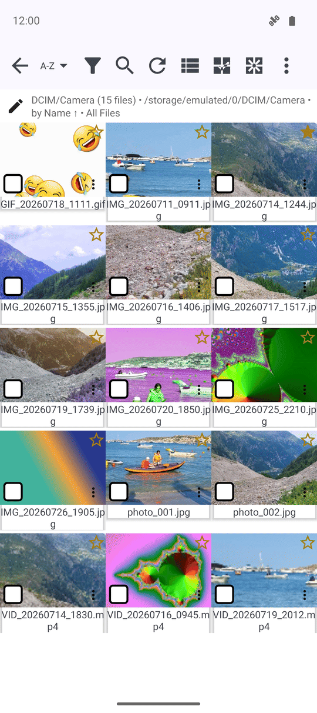
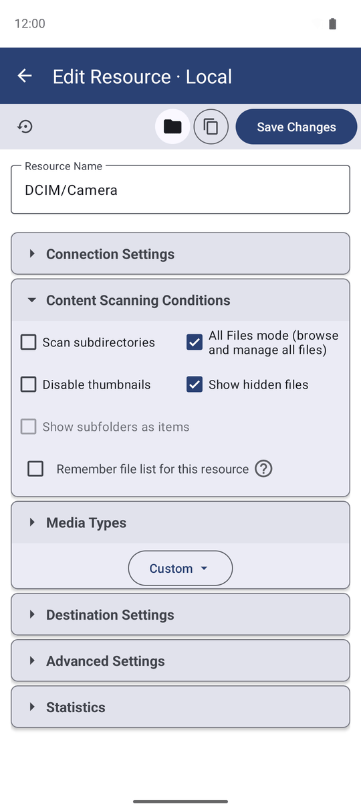
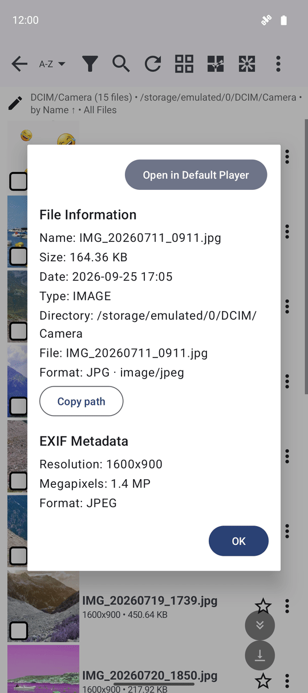
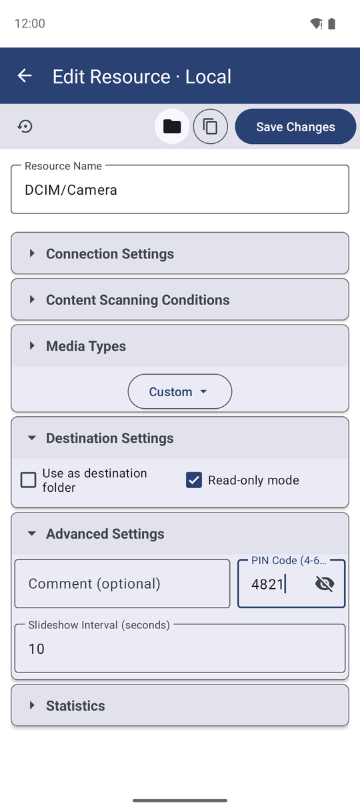

Просмотр медиаколлекций
В файловом браузере открываются любые ресурсы: переключайтесь между сеткой и списком, легко перемещайтесь по папкам через кнопку пути, включайте режим файлового менеджера, просматривайте подробные метаданные или защищайте папки ПИН-кодом, работая со съёмными накопителями, архивами и документами.
Почему вам это понравится
Каждый ресурс открывается в одном и том же окне — файловом браузере. Содержит ли папка двенадцать фотографий или двенадцать тысяч файлов, именно здесь вы знакомитесь с её содержимым, переходите по подпапкам и выбираете действия с файлами. Уверенная ориентация в интерфейсе браузера — переключение вида, кнопки панели инструментов и встроенные меню — сделает вашу работу быстрой и комфортной.
Никакие действия на этой странице не изменяют сами файлы. Включение настроек или открытие меню меняет лишь то, как отображается уже имеющийся контент.
- ✓ Установленный FastMediaSorter. Файловый браузер входит во все редакции: Standard, noLegal, Lite, Photos, Legacy, VR и FOSS.
- ✓ Как минимум один добавленный ресурс. Если вы ещё ничего не добавили, см. рецепт Настройка локальных и съёмных хранилищ.
- ✓ Установка APK-пакетов напрямую из браузера доступна только в автономной редакции noLegal.
Открытие ресурса и выбор вида (сетка или список)
Нажмите на ресурс на главном экране, чтобы открыть его в файловом браузере. Нажмите кнопку Вид на панели инструментов, чтобы переключить отображение папки между режимом сетки с крупными миниатюрами и режимом списка, где каждая строка отведена под один файл с подробным текстом. Аудиоресурсы всегда открываются в виде списка, так как для них нет графических миниатюр. Выбранный режим отображения надёжно запоминается индивидуально для каждого ресурса.
Под каждой миниатюрой или именем файла выводится информационная строка с ключевыми характеристиками: разрешение и дата съёмки для фото, разрешение и хронометраж для видео, исполнитель и название трека для музыки, размер и дата изменения для остальных файлов.

Навигация по подпапкам с помощью кнопки пути
Если ресурс настроен на просмотр вложенных папок, подпапки отображаются в виде обычных строк или карточек, в которые можно зайти. Имя текущей папки вынесено в единую компактную кнопку в верхней части экрана вместо длинной цепочки путей, разрастающейся вглубь. Нажатие на эту кнопку открывает меню с перечислением всех папок по пути от корня ресурса до текущего места — нажмите на любую из них для мгновенного перехода.
В длинных списках у края экрана автоматически появляются кнопки быстрой прокрутки в начало, в конец или постраничного листания — они отображаются только тогда, когда список действительно достаточно велик.
Файловый браузер сохраняет историю переходов по папкам, поэтому системная кнопка «Назад» возвращает вас на один уровень вверх, а не выбрасывает из ресурса сразу.
Отображение всех типов файлов через «Режим файлового менеджера»
По умолчанию ресурс отображает только те категории файлов, для которых он предназначен (например, только изображения в папке с фотографиями). Чтобы увидеть абсолютно все файлы, включая нераспознанные форматы, откройте свойства ресурса и включите Режим файлового менеджера. В этом режиме браузер покажет все существующие в папке файлы, игнорируя стандартный медиафильтр.
При активном режиме файлового менеджера становится доступен переключатель Показывать скрытые файлы, делающий видимыми объекты с точкой в начале имени.

Создание папок и быстрых зарисовок прямо в браузере
Нажмите кнопку Создать папку на панели инструментов, чтобы добавить новую подпапку прямо в текущем расположении — на локальном диске, в сетевом ресурсе SMB/SFTP или в облаке (в ресурсах «только для чтения» кнопка скрыта). В меню с тремя точками также есть пункт Создать рисунок, открывающий чистый лист в редакторе рисунков и сохраняющий получившееся изображение прямо в открытую папку — удобно для быстрых заметок и скетчей.
В меню с тремя точками есть прямой пункт перехода в «Настройки приложения», позволяющий изменить параметры отображения и сразу вернуться к просмотру без лишних экранов.
Просмотр свойств файла и добавление в Избранное
Откройте меню с тремя точками для любого файла и выберите пункт «Свойства», чтобы открыть шторку со всеми деталями: размером, полным путём, разрешением кадра, битрейтом и метаданными камеры (EXIF).
На каждой строке файла также находится значок звёздочки: нажмите на него, чтобы мгновенно добавить или убрать файл из Избранного прямо в списке, без открытия самого файла.

Воспроизведение музыки прямо в списке
В папке с музыкой нажмите значок воспроизведения на строке трека, чтобы запустить прослушивание прямо в списке без открытия полного окна аудиоплеера. При воспроизведении с сетевого диска трек кэшируется локально по ходу звучания, а следующий трек тихо подгружается заранее, обеспечивая непрерывное воспроизведение без пауз.
Защита ресурса режимом «Только чтение» и ПИН-кодом
Две настройки ресурса защищают его от случайных изменений. Включение пункта Режим «Только чтение» в редакторе ресурса убирает все кнопки перемещения, переименования и удаления файлов; любые попытки изменить данные будут заблокированы с понятным сообщением.
Установка ПИН-кода (от 4 до 6 цифр в поле ПИН-код доступа) заставляет приложение запрашивать код при каждом открытии данного ресурса, а на главном экране рядом с ресурсом отображается значок замка. Этот ПИН защищает ресурс внутри FastMediaSorter независимо от блокировки самого смартфона.

Компактный режим для небольших экранов
На смартфонах с небольшим экраном или низким разрешением откройте Настройки и включите параметр Компактные элементы. Он уменьшает масштаб строк, кнопок панели инструментов и шрифтов примерно вдвое, позволяя уместить больше файлов на одном экране. Настройка действует глобально во всём файловом браузере.
Съёмные накопители, ZIP-архивы и офисные документы
Подключите SD-карту или USB-флешку через OTG, и она появится в специальном разделе Съёмные носители при добавлении папок, с отображением имени накопителя и свободного места. После однократного подтверждения тома в системе ресурсы на внешнем диске работают так же полноценно, как и во встроенной памяти — а при нехватке места операция копирования предупредит об этом заранее.
Нажмите на архив ZIP для распаковки на месте; защищённый паролем архив запросит пароль, а в случае ошибки сразу покажет понятное объяснение. Документы Word, RTF, ODT, а также защищённые PDF открываются через сторонние установленные приложения. Архивы и образы (.iso, .7z, .rar, .dmg) имеют зарегистрированные типы файлов, благодаря чему меню «Открыть с помощью» предлагает только подходящие программы.
Файлы без графических превью
Для файлов без графического предпросмотра при нажатии открывается аккуратная нижняя шторка с действиями: «Поделиться», «Открыть в..», «Копировать», «Переместить», «Переименовать» и «Удалить». Если имена файлов начинаются одинаково, на их стандартных значках пишется имя файла целиком, исключая путаницу; на смарт-часах эта надпись имеет чёткую контрастную обводку для отличной читаемости на любом фоне.
Если папка открыта без предоставления полного доступа к памяти устройства, под панелью инструментов появится полоса с объяснением, что видны только фото, видео и музыка. Предупреждение показывается один раз и больше не отвлекает.
Просмотр на смарт-часах с Wear OS
Приложение для часов позволяет открывать сетевые папки прямо с запястья: при выборе разделов «Музыка», «Фото» или «Видео» отображаются только файлы соответствующего типа, а форматы .mkv и .flac полноценно поддерживаются. Сетевой ресурс с сохранённым путём на часах сразу открывает нужную папку вместо корня сервера, а телефон представлен как отдельный ресурс без дублирования путей. Подробнее: Файловый менеджер на смарт-часах.
Установка загруженных приложений (редакция noLegal)
В независимой сборке noLegal нажатие на файл APK в браузере передаёт его системному установщику Android. Если система отклоняет установку, браузер подробно объясняет причину: на устройстве уже установлена более новая версия, не совпадает ключ подписи, недостаточно памяти или повреждён сам файл пакета. При прерывании загрузки APK из облака операция корректно отменяется без ложных ошибок.
Что вы получите
Вы свободно открываете любые ресурсы в удобном виде (сетка или список), перемещаетесь по подпапкам в одно касание через кнопку пути, при необходимости видите все файлы с помощью «Режима файлового менеджера», просматриваете метаданные, блокируете папки ПИН-кодом, а также работаете с флешками, архивами и документами.
Советы и решение проблем
- Папка показалась пустой после возврата из просмотрщика? Файловый браузер автоматически перепроверяет состояние на диске вместо устаревшего списка, быстро синхронизируя отображение.
- Встроенные коллекции («Все изображения», «Недавние медиа») отображаются не на том языке? Они обновляют названия на текущий язык приложения при следующем запуске.
- Хотите изменить порядок файлов перед просмотром? Ознакомьтесь с руководством Сортировка, фильтрация и быстрый поиск.